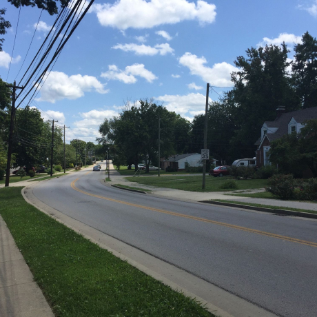

Kiev, Ucrania
ARTISTA
Natalia Dolgushina, productora de contenidos

Kiev (o Kyiv), la capital de Ucrania, es una gran ciudad situada
a orillas del río Dniéper. Por supuesto, nadie en su sano juicio
se bañaría en el río, a menos que se haya criado aquí, en cuyo
caso probablemente lo haya intentado en algún momento. Los
veranos son calurosos aquí, y los inviernos con fuertes
corrientes de aire, pero el otoño y la primavera son
absolutamente increíbles.
La ciudad en sí es una mezcla de arquitectura
prerrevolucionaria, de posguerra y soviética, toda ella
salpicada de balcones modificados. Si te encuentras en la orilla
derecha del Dniéper, el paisaje es difícil de atravesar para las
personas en bicicleta y las que llevan tacones. Sin embargo, la
orilla izquierda es considerada mucho menos interesante y
prestigiosa, incluso por la gente que vive en las afueras de la
derecha.
Comprar esta obra de arte como NFT
Criccieth, Gales
ARTISTA
Steffan Warren, editor principal
Kseniya Glagoleva, directora del proyecto

La ruina medieval del castillo de Criccieth domina la ciudad
desde una roca que se adentra en el mar. Se cree que fue
construido por Llewelyn el Grande en el siglo XIII. Unos 900
años después, la autodenominada *Perla de Gales a orillas de
Snowdonia* se ha convertido en un popular destino turístico
durante los meses de verano.
A poca distancia del castillo, se puede disfrutar del mejor
helado del mundo en Cadwalader's, cuyo ingrediente secreto se
rumorea que son las algas de la zona. Otro reclamo a la fama es
el hecho de que Criccieth ganó el premio *Wales in Bloom*
durante cinco años consecutivos por sus espectaculares
exhibiciones florales alrededor de la ciudad. También fue el
hogar de David Lloyd George, el único galés que ocupó el cargo
de Primer Ministro del Reino Unido.
Comprar esta obra de arte como NFT
Berea, Estados Unidos
ARTISTA
Travis Turner, autor y editor

Berea es una pequeña ciudad situada en la parte central de
Kentucky. La ciudad está rodeada de hermosos bosques y campos.
Es conocida como la capital del arte y la artesanía del estado,
y los visitantes encontrarán muchas oportunidades de compra:
tiendas con joyas hechas a mano, velas, artículos de madera,
galerías, estudios de vidrio y mucho más. La ciudad celebra cada
año un festival en el que se festeja el "spoonbread", un plato
local hecho con pan de maíz y servido con una cuchara de madera.
Sin embargo, es probablemente más conocido por la universidad
local. Berea College se fundó en 1855 y fue la primera
universidad del sur de EE.UU. en estar integrada racialmente,
así como la primera en ser coeducativa. De manera singular, no
cobra matrícula: todos los estudiantes reciben una beca de
matrícula completa.
Comprar esta obra de arte como NFT
Muramvya, Burundi
ARTISTA
Grevisse Kenguruka, editor técnico

Muramvya es una de las 18 provincias de Burundi. En la época del
reino, Muramvya era la capital real y en 2007, por su cultura y
paisaje natural, fue incluida en la lista indicativa del
Patrimonio Cultural Mundial de la UNESCO. Está situada en el
centro de Burundi, entre las capitales política y económica del
país.
El clima es más bien frío por la noche, pero durante el día,
creerás que estás en el paraíso. A 2.665 metros sobre el nivel
del mar, el monte Teza es uno de los lugares más fríos de la
provincia. Pero esa brisa fresca permite el crecimiento de una
de las mayores plantaciones de té y café del país, que
constituyen la mayor parte de las exportaciones de Burundi.
El Parque Nacional de Kibira, una de las mayores reservas de
fauna silvestre para simios, se extiende por cuatro provincias,
incluida Muramvya. Este Parque Nacional se encuentra en el
vértice de las hermosas montañas de la divisoria Congo-Nilo, que
oscilan entre los 1.550 y los 2.660 metros de altitud. Está
lleno de hermosa vegetación, y es una fuente para los diversos
ríos y arroyos que proporcionan agua en todo el país.
Comprar esta obra de arte como NFT
Chillán, Chile
ARTISTA
Fabiola Parra Vejar, estudiante
Chillán, "Silla del Sol" en lengua Mapuche, es la capital de la
región de Ñuble, en la zona centro-sur de Chile. Es conocida por
la longaniza (embutido de carne de cerdo y de forma alargada) y
los terremotos que la han azotado, siendo el del año 1939 el que
dejó mayor número de fallecidos en la historia del país, con
cerca de 30.000. La cruz de la catedral de la ciudad fue
construida en memoria de las víctimas y se realiza un acto
conmemorativo en este lugar cada año.
El clima es templado cálido mediterráneo y es una de las
ciudades con mayores temperaturas en verano (38º a la sombra).
Hacia la cordillera de los Andes se encuentran las "Termas de
Chillán", un conjunto de piscinas naturales ubicadas a las
faldas del complejo volcánico "Nevados de Chillán". Este es un
destino turístico muy visitado especialmente en invierno, por
los deportes de nieve que se pueden realizar.
Comprar esta obra de arte como NFT